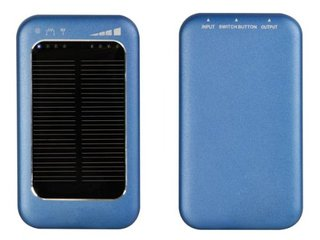

Cuando hablamos de móviles uno de los temas más recurrentes y en el que estamos todos muy de acuerdo es en la duración de sus baterías. Lo cierto es que cada vez somos más dependientes de unos terminales que hace mucho tiempo dejaron de ser simples emisores y receptores de llamadas. Las prestaciones son cada [...]
Cuando hablamos de móviles uno de los temas más recurrentes y en el que estamos todos muy de acuerdo es en la duración de sus baterías. Lo cierto es que cada vez somos más dependientes de unos terminales que hace mucho tiempo dejaron de ser simples emisores y receptores de llamadas. Las prestaciones son cada vez mayores, y mayor es también su consumo.
Es por este motivo que lo que antes cargábamos una o dos veces a la semana ahora tengamos que cargarlo a diario. La batería de un smartphone como norma general no pasa de las 24 horas, en algunos casos incluso no llega a las 14 horas de funcionamiento. A más uso, evidentemente, más consumo. Pero ¿hay algo que podamos hacer para ahorrar batería?
Esta sería la pregunta del millón, y lo cierto es que hay bastantes trucos que nos pueden ayudar a conservar la batería algo más de lo que vendría habitualmente a durar. También existen algunos remedios para que, en caso de ser de vital importancia, siempre tengas batería en el móvil. Vamos a intentar recopilar todos los remedios posibles, además de algunos consejos útiles.
Conexiones móviles
Una de las diferencias más remarcadas entre los antiguos móviles que cargábamos y los actuales smartphones son la posibilidad de conectarse a redes móviles. El espectacular crecimiento del uso de smartphones junto con las tarifas planas han relegado la voz a un segundo plano en la mayoría de los usuarios, sobre todo los más jóvenes. Y es esta disponibilidad de conexión la que provoca en gran parte un consumo de batería elevado.
En este caso el truco es relativamente sencillo: Controlar la sincronización de datos para evitar que esté constantemente conectando y desconectando. Para ello nos podemos valer de aplicaciones cuya sincronización sea Push, es decir, que no es la aplicación la que ha de estar constantemente conectando en busca de actualización (p.e mail, Gmail o Twitter). También tenemos aplicaciones que nos pueden ayudar a determinar qué aplicaciones y cada cuánto han de conectarse en busca de actualizaciones.
Quizá más extremo, pero igualmente útil en caso de estar muy escaso de batería es desconectar la conexión de datos y usarla únicamente cuando sea necesario. Activar el modo avión si queremos tener el terminal encendido pero totalmente “capado” para que no consuma datos es otra posibilidad.
Usar lo que se necesita
Muchas prestaciones son totalmente prescindibles en nuestro día a día, y gran parte de las veces por pereza no las desactivamos. Lo ideal es tener siempre activado única y estrictamente lo que vamos a usar. Es decir, apagar WiFi si no tenemos una red disponible, y viceversa, desactivar GPS o Bluetooth. Si necesitas tenerlo más organizado puedes utilizar aplicaciones que te creen perfiles personalizados para este menester y ahorrar tiempo. Igualmente entraría dentro de este punto la vibración del móvil, que también consume batería y muchas veces es prescindible. Así mismo los widgets, que en algunas ocasiones son auténticos devoradores de batería, podemos quitarlos si no son demasiado necesarios.
Pantalla
Otro de los roba baterías por excelencia. Con las pantallas que gastamos en nuestros smartphones, ese brillo y esa definición es lógico que la batería aguante más bien poco. Así que, está muy bien que luzca y se vea estupendamente bien pero en nuestro día a día tenemos que apostar por la practicidad, y en este caso lo ideal es regular el brillo a un nivel bajo, pero suficiente para poder ver bien el terminal. Puede parecer una chorrada per si ajustamos el brillo y también reducimos el tiempo de espera de la pantalla (lo que tarda en apagarse automáticamente), podemos ahorrarnos batería suficiente para tirar más horas.
Carga y descarga de la batería
Muchos mitos y leyendas al respecto de este tema. Las baterías antiguas de Níquel-cadmio sí que tenían memoria de carga, por lo que era muy recomendable el realizar cargas largas y siempre cuando la batería estuviera a punto de agotarse. Esto ha cambiado muchísimo con el paso a las baterías de litio-ion. Con ellas no es necesario hacer cargas completas.
Ahí van algunos consejos para aprovechar al máximo la batería:
-
Pequeñas cargas durante el día son poco recomendables, al contrario, es mejor realizar ciclos completos para obtener un mejor resultado. Ideal: Dejarlo cargando todas las noches independientemente de la carga que le quede.
-
Ojo con las temperaturas: Las baterías son especialmente sensibles con las temperaturas así que procuraremos evitar dejar el móvil en el coche en verano o un entorno similar en el que la temperatura es superior a 40º. Lo mismo si es demasiado frío.
-
Utiliza siempre el cargador original. Puede parecer una chorrada pero a veces el usar un cargador que no es de nuestro móvil puede llevarnos alguna sorpresa. Aunque sea un estándar muchas veces hay teléfonos con ciertas particularidades que pueden afectar a la vida y rendimiento de nuestra batería.
¿Qué alternativas tenemos?
Si seguimos estos consejos puede que aliviemos un poco la carga de la batería pero no son milagrosos, y todo tiene un límite. Y la duración de la batería es la que es, desgraciadamente. Por este motivo siempre podemos ir previstos de algunas alternativas que pueden salvarnos de más de un momento difícil. Algunas son más cómodas de transportar que otras, pero es cuestión de escoger la que más se adapte a nuestras necesidades.
Batería extra
Uno de los remedios más típicos y que tenemos que adaptar aquellos que vivimos prácticamente todo el día colgados del móvil y le damos mucho uso es comprar otra batería igual que la original. De esta forma podemos ir alternando en caso de quedarnos sin batería y no tenemos sitio donde poner a cargar el teléfono. No es una solución demasiado cara y realmente es de las más prácticas, ya que cargar una batería en la mayoría de los casos no es algo molesto ni voluminoso, y es fácil y económico.
Ojo, porque también podríamos optar por la solución de comprar una batería de más capacidad. NO es recomendable, menos aún si la batería no es original, puesto que estamos forzando al terminal a funcionar de forma anormal y podemos estar acortando su vida útil.
Cargadores solares
Una solución genial, limpia y más económica de lo que pensamos es adquirir un cargador solar. Los hay de distintos tamaños y capacidades, compatibles con muchos modelos de móvil o universales. Realmente una solución bastante práctica si vamos a estar mucho tiempo fuera de casa. El funcionamiento no podría ser más simple, puesto que el cargador va equipado con células fotovoltáicas que van a ir cargando una batería interna. Una batería de la que nos podremos abastecer cuando estemos faltos de energía en nuestro móvil.
Puedes encontrar muchos modelos distintos y precios en Amazon, aunque una búsqueda en Google también te puede dar muchas ideas de dónde adquirirlo y a qué precio.
Baterías externas
Otro remedio, este no tan cómo de transportar quizá, es adquirir baterías externas. Las hay de muchas capacidades y aunque no son excesivamente caras si que ya ha de ser para un caso en el que estés de viaje y no sepas cuando podrás cargar tus gadgets, o necesitas cierta autonomía. Pesan algo más y son más incómodas, pero muy útiles. Puedes ver modelos y precios en Google.
Cargador “manual” de emergencia
Puede parecer una chorrada, pero un cargador de dínamo nos puede salvar en algún momento “in extremis”. Este es el método más rudimentario de generar electricidad y quizá requiera cierto esfuerzo llegar a generar la suficiente electricidad como para darle una carga decente al móvil. Pero no hay duda de que para un “apañito” nos puede salir bien. Teniendo en cuenta su bajísimo precio es una opción para llevar el bolso o mochila sin mucho problema. Puedes encontrarlos aquí.
La solución definitiva
Hemos repasado muchos trucos y soluciones para evitar quedarnos tirados sin batería en nuestro móvil, pero he obviado una, quizá la más importante y definitiva. Se trata ni más ni menos que de apagar el móvil. Si ves que vas muy apurado de batería y no tienes dónde ni como cargarla, sé previsor y apagar el móvil para usarlo sólo en caso de necesidad. Este es quizá el remedio más efectivo para no gastar batería, además no nos cuesta nada y es fácil. ¿Qué otros trucos utilizáis vosotros?

 El Domingo es el típico día que nos pasamos con el cuerpo relajado y la cabeza ociosa, al menos esa es la teoría. Así que no hay mejor cosa que disfrutar y no hacer funcionar mucho nuestro cerebro. Bajo este planteamiento se nos presenta una web genial para este menester, y pasar un rato divertido viendo como otros quizá tampoco han usado demasiado su cabeza para concebir una web totalmente inútil.
El Domingo es el típico día que nos pasamos con el cuerpo relajado y la cabeza ociosa, al menos esa es la teoría. Así que no hay mejor cosa que disfrutar y no hacer funcionar mucho nuestro cerebro. Bajo este planteamiento se nos presenta una web genial para este menester, y pasar un rato divertido viendo como otros quizá tampoco han usado demasiado su cabeza para concebir una web totalmente inútil. ¿Pero qué significa que Google libere el código fuente? Significa que el código fuente de Android está disponible para cualquiera para descargarlo, estudiarlo y trastear con él todo lo que quiera. ¿Y qué ventajas tiene? Pues así a bote pronto se me ocurren 2 ventajas principales. La primera, permite que cualquier fabricante de dispositivos puede incluir Android en los mismos. Pero no sólo pueden los fabricantes adaptar Android a sus dispositivos y es aquí donde viene la segunda ventaja: se pueden desarrollar nuevas ROMs y cualquiera puede hacerlo -evidentemente hacen falta unos conocimientos para poder hacerlo-, de manera que nos encontramos que para un mismo dispositivo hay muchas ROMs diferentes a cada cual optimiza más los recursos del propio dispositivo y la mayoría de las veces mejores que la del propio fabricante.
¿Pero qué significa que Google libere el código fuente? Significa que el código fuente de Android está disponible para cualquiera para descargarlo, estudiarlo y trastear con él todo lo que quiera. ¿Y qué ventajas tiene? Pues así a bote pronto se me ocurren 2 ventajas principales. La primera, permite que cualquier fabricante de dispositivos puede incluir Android en los mismos. Pero no sólo pueden los fabricantes adaptar Android a sus dispositivos y es aquí donde viene la segunda ventaja: se pueden desarrollar nuevas ROMs y cualquiera puede hacerlo -evidentemente hacen falta unos conocimientos para poder hacerlo-, de manera que nos encontramos que para un mismo dispositivo hay muchas ROMs diferentes a cada cual optimiza más los recursos del propio dispositivo y la mayoría de las veces mejores que la del propio fabricante.